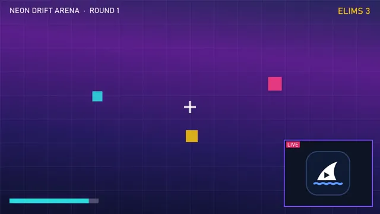
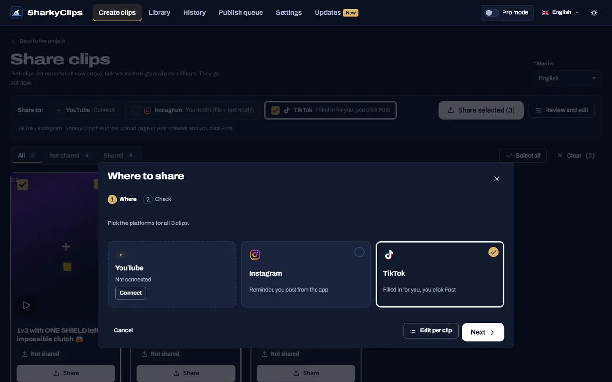

Funktioniert mit Kickund mit Twitch, YouTube oder jeder Videodatei
Dein Stream rein, fertige Clips raus.
SharkyClips findet die besten Momente in deiner Stream-Aufnahme und macht daraus vertikale Clips für YouTube Shorts, TikTok und Instagram Reels. Alles läuft auf deinem eigenen PC.
- 100 % kostenlos
- Kein Wasserzeichen
- Keine Limits
- Läuft auf deinem PC
Echte Ergebnisse
Jedes Paar zeigt einen Moment im langen Stream und denselben Moment im Clip, den SharkyClips daraus von selbst gemacht hat: geschnitten, in 9:16, mit Untertiteln und Titel.
 Stream · 4:39
Stream · 4:39 Fertiger Clip
Fertiger ClipOne grenade, triple kill! What did I see? 🤯Gewählt wegen einer lauten Reaktion, einer Chat-Explosion (14-mal mehr Nachrichten) und "what the hell". Wertung 93.  Stream · 1:11
Stream · 1:11 Fertiger Clip
Fertiger ClipOne versus three? I pulled off a CLUTCH! 😱Ein 1-gegen-3-Comeback: laute Stimme, Chat 12-mal schneller, "no way" und "clutch". Wertung 78.  Stream · 5:28
Stream · 5:28 Fertiger Clip
Fertiger ClipDid that last throw really just win the game?Der Siegmoment: kurze Stille, dann Jubel und "let's go". Wertung 85. 
Stream · 0:21 Fertiger Clip
Fertiger ClipDid you really see that double elimination happen?Ein Doppel-Kill: "oh my god", eine laute Reaktion und der Chat 11-mal schneller. Wertung 82.  Stream · 2:53
Stream · 2:53 Fertiger Clip
Fertiger ClipZero armor, reckless run, barely alive! 😱Panische Flucht vor dem Boss. Das Schimpfwort ist überpiept und in den Untertiteln versteckt. Wertung 64.  Stream · 3:51
Stream · 3:51 Fertiger Clip
Fertiger ClipPracticed all week, then finally landed itEin die ganze Woche geübter Sprung: "yes!" und "LETS GOOO" im Chat. Wertung 75.
Gemacht aus unserem Demo-Stream (ein gezeichnetes Spiel, eine Computerstimme und ein erzeugter Chat), daher ist keine echte Person, kein echtes Spiel und kein Kanal zu sehen. Nichts wurde von Hand bearbeitet.
So funktioniert es
Drei Schritte. Den Schnitt dazwischen macht SharkyClips.
Stream hinzufügen
Zieh eine Videodatei hinein oder füge einen Twitch-, YouTube- oder Kick-Link ein. SharkyClips kann auch die neueste Aufnahme aus deinem OBS-Ordner nehmen.
SharkyClips macht die Clips
Es findet die lauten, lustigen und spannenden Momente, schneidet sie sauber, fügt Untertitel hinzu, piept Schimpfwörter aus und schreibt die Titel.
Prüfen und teilen
Schau dir die Clips an, ändere, was du willst, und teile sie auf YouTube Shorts, TikTok und Instagram Reels.



Gemacht für Streamer
Findet die Momente
Laute Reaktionen, Lachen, Chat-Explosionen und Spielereignisse werden zu einer sortierten Clip-Liste.
Ausgepiept, geprüft
Schimpfwörter werden in 11 Sprachen ausgepiept, und jeder fertige Clip wird noch einmal angehört.
Ein Teilen-Knopf
YouTube Shorts, TikTok und Instagram Reels, mit dem richtigen Text und den Grenzen jeder Plattform.
TikTok-HelferNeu
Eine kleine Browser-Erweiterung für Edge, Chrome, Opera und Brave füllt deinen TikTok-Upload aus. Du prüfst ihn und klickst selbst auf Posten.
Foto-DiashowNeu
Mach aus 2 bis 20 Fotos ein vertikales Vorher-nachher-Video mit Beschriftungen und Musik.
Designs und FarbenNeu
Vier Farbdesigns für die App (Klassisch, Ozean, Shark Sign, Hoher Kontrast), dunkel oder hell, und deine eigene Akzentfarbe.
SharkyClips im Vergleich
Angaben von der offiziellen Website jedes Produkts, geprüft am 28. November 2026. Preise in US-Dollar, ohne Steuern. Pläne ändern sich, prüfe also ihre Seiten, bevor du dich entscheidest.
| Merkmal | SharkyClips | Eklipse | OpusClip | StreamLadder |
|---|---|---|---|---|
| Preis | Kostenlos (Open Source, MIT-Lizenz) | Kostenloser Test; Premium ab 24,99 $ im Monat oder 179,99 $ im Jahr | Kostenloser Plan; bezahlte Pläne ab 15 $ im Monat | Kostenloser Plan; bezahlte Pläne ab 15 $ im Monat oder 150 $ im Jahr |
| Wasserzeichen | Nie | Bei kostenlosen Exporten | Im kostenlosen Plan | Nur wenn ein kostenloser Clip bezahlte Funktionen nutzt |
| Clip-Limits | Keine | Kostenlos: Vorschau der Clips eines aktuellen Streams; Premium: unbegrenztes KI-Clipping | Kostenlos: 60 Verarbeitungsminuten im Monat, Dateien 3 Tage gespeichert | Keine Minutenlimits; KI-Clipping ganzer Streams ab dem Creator-Plan (27 $ im Monat); kostenlose Exporte in 720p |
| Wo dein Video verarbeitet wird | Auf deinem PC: nichts wird hochgeladen | Online: die KI-Bearbeitung läuft in der Cloud | Online: du lädst eine Datei hoch oder fügst einen Link ein | Online: du lädst eine Datei hoch oder fügst einen Link ein |
| Was du brauchst | Einen PC mit Windows 10 oder 11 und 8 GB RAM (macOS: weniger getestet) | Einen Browser und ein Konto | Einen Browser und ein Konto | Einen Browser und ein Konto |
| Spielerkennung | Liest den Spielbildschirm in Delta Force und League of Legends; andere Spiele über Stimme, Ton und Chat | Mehr als 3.000 Spiele, auf jede Spielkategorie abgestimmt | Nicht angegeben | Nicht angegeben |
| Kick | Kick-Videos mit ihrem Chat | Importiert Kick-Streams | Kick-Links werden unterstützt | Kick-Clips im kostenlosen Plan; ganze Kick-Streams ab dem Creator-Plan |
| Schimpfwörter überpiepen | Automatisch in 11 Sprachen, jeder Clip wird noch einmal geprüft | Nicht angegeben | Ab dem Pro-Plan (29 $ im Monat) | Automatische Wortzensur (Plan nicht klar angegeben) |
| Sprachen | 11 (App, Spracherkennung und Untertitel) | Für Untertitel nicht angegeben; Sprachbefehle auf Englisch | Mehr als 25 für Untertitel | Mehr als 90 für Untertitel |
„Nicht angegeben“ heißt, dass wir es auf ihren offiziellen Seiten nicht gefunden haben. Ist etwas falsch oder veraltet? Schreib uns über die Kontaktseite, dann korrigieren wir es.
Quellen (14 offizielle Seiten)
- eklipse.gg
- eklipse.gg/help/how-much-does-eklipse-premium-cost
- eklipse.gg/help/what-are-the-main-differences-between-the-free-and-premium-plans
- eklipse.gg/help/will-my-exported-video-have-a-watermark
- eklipse.gg/help/import-kick-streams-to-eklipse
- eklipse.gg/features/ai-edit
- opus.pro/pricing
- help.opus.pro/docs/article/plans-and-credits.md
- help.opus.pro/docs/article/video-sources-supported.md
- help.opus.pro/docs/article/video-languages-supported.md
- streamladder.com/pricing
- streamladder.com/clipgpt/import-from-kick
- streamladder.com/clip-editor/word-censoring
- streamladder.com/clip-editor/captions
Wie SharkyClips YouTube nutzt
YouTube zu verbinden ist freiwillig. Wenn du es verbindest, nutzt SharkyClips die offiziellen YouTube API Services nur, um die Clips hochzuladen und zu verwalten, die du auswählst, und dir ihre Ergebnisse zu zeigen. Deine YouTube-Daten bleiben auf deinem Computer.
Berechtigungen und die Nutzung deiner YouTube-Daten anzeigen
Der Upload zu YouTube ist freiwillig. Wenn du deinen Kanal unter Einstellungen → YouTube verbindest, nutzt SharkyClips die offiziellen YouTube-API-Dienste genau für diese Dinge, und nur, wenn du es willst:
| Aktion | Berechtigung (Scope) | Wann |
|---|---|---|
| Einen Clip hochladen, den du vorbereitet hast (Titel, Beschreibung, Tags, Sichtbarkeit, Veröffentlichungszeit, Playlist, Thumbnail); seine Angaben oder Zeit ändern, ihn früher veröffentlichen oder löschen, wenn du ihn vor der Veröffentlichung abbrichst; anzeigen, welcher Kanal verbunden ist; Aufrufe, Likes und Sichtbarkeit der Videos lesen, die mit SharkyClips hochgeladen wurden | youtube | Wenn du Jetzt veröffentlichen drückst oder einen Clip planst (vorab hochgeladen, solange dein PC an ist), ihn in der Bibliothek änderst oder abbrichst, die Einstellungen öffnest, und etwa alle 6 Stunden, während die App läuft |
| Den durchschnittlichen Wiedergabeanteil derselben Videos lesen, um zu lernen, welcher Einstieg (Hook) deine Zuschauer hält | yt-analytics.readonly | Nur für Clips, die als Teil eines Hook-Tests hochgeladen wurden und seit 48 Stunden öffentlich sind |
Diese Daten werden nur auf deinem Computer gespeichert und nur genutzt, um dir deine Ergebnisse zu zeigen und die Clip-Bewertungen für deinen Kanal zu verbessern. SharkyClips hat keinen Server: Die Entwickler erhalten, sehen oder teilen deine YouTube-Daten nie, und nichts wird für Werbung genutzt. SharkyClips liest nie Kanäle anderer Leute, deine Kommentare, deine Abonnenten oder deinen Verlauf. Es ändert oder löscht nur Videos, die mit SharkyClips hochgeladen wurden, und nur, wenn du es willst (zum Beispiel, wenn du einen geplanten Clip änderst oder abbrichst).
Du kannst die Verbindung jederzeit unter Einstellungen → YouTube trennen (damit wird das Zugriffstoken bei Google widerrufen) oder den Zugriff in deinen Google-Kontoberechtigungen entfernen. Mit dem Verbinden stimmst du den YouTube-Nutzungsbedingungen zu; Google verarbeitet deine Daten nach der Google-Datenschutzerklärung. Lies unsere vollständige Datenschutzerklärung und die Nutzungsbedingungen.
Kostenlos, offen, privat
SharkyClips steht unter der MIT-Lizenz: kein Abo, keine Credits, kein Wasserzeichen. Es gibt kein Konto und kein Tracking, und deine Videos bleiben auf deinem PC, außer du teilst sie. Der Quellcode und jede Version sind auf GitHub.